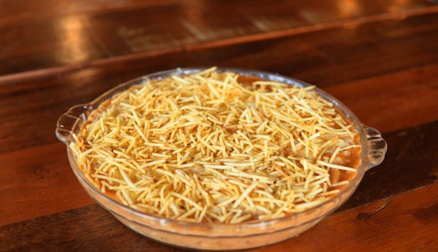
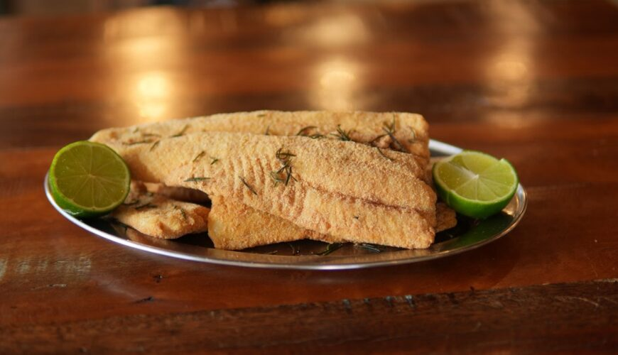
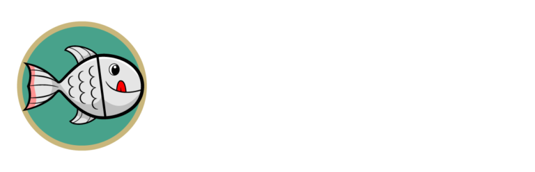

Peixe
ao Forno
O carro-chefe declarado pela casa.

Curitiba · desde 1998
Um cardápio de peixes e frutos do mar no Rebouças, com uma história de família que começou em Toledo–PR.

Peixe frito
Uma históriaSegundo a história publicada pelo restaurante, o Pantanal começou em 1998, em uma chácara da família em Toledo–PR, ao lado de um pesque-e-pague. O pequeno restaurante cresceu — e o Peixe ao Forno permanece descrito pela casa como seu carro-chefe.
A cozinha de Curitiba
A página oficial apresenta Thiago Paetzold Gonçalves como chef da unidade de Curitiba.
Terça a sexta
Almoço 11h–15h · Jantar 18h–23h
Sábado e domingo
Almoço 11h–15h · Jantar 18h–23h